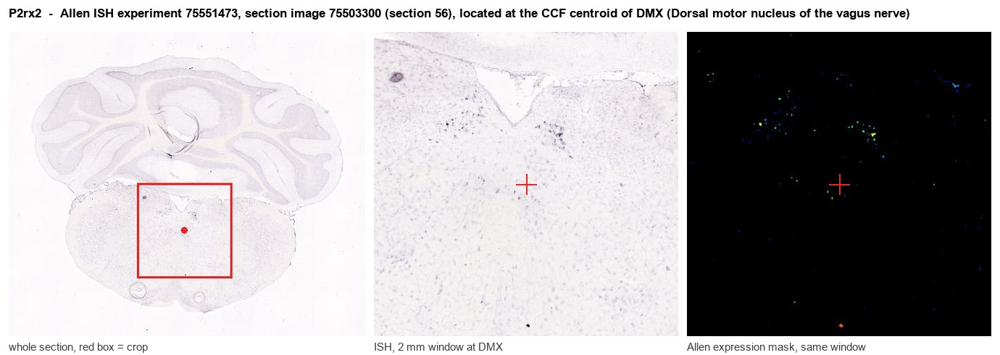
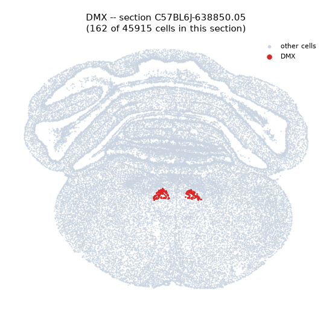
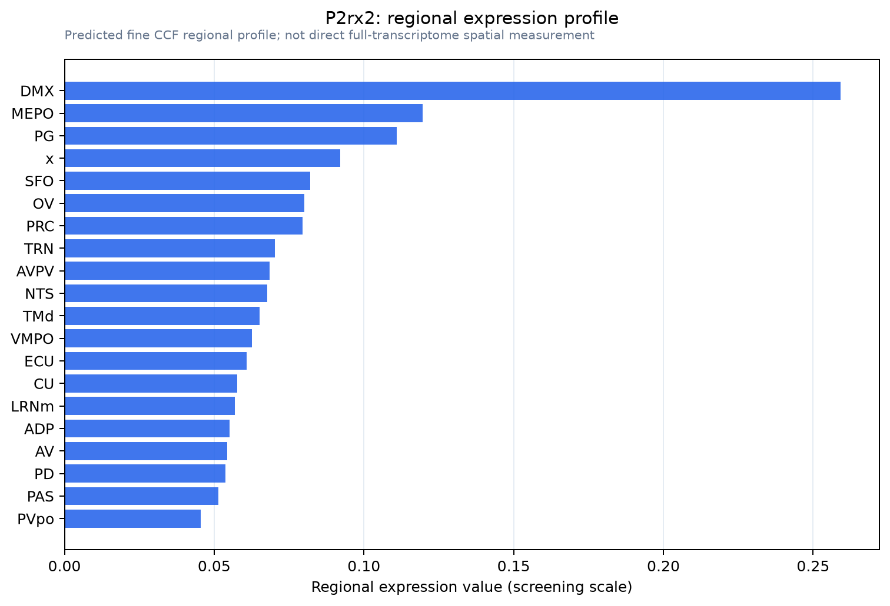

P2rx2
P2X purinoceptor 2 (P2X2) (ATP receptor) (Purinergic receptor)
Spatial tier: RESTRICTED · Class: ION_CHANNEL · Top region: DMX (Dorsal motor nucleus of the vagus nerve) · Positive regions: 13/554
46.7Discovery Score
36.4Targetability Score
CEvidence grade C
What this means: P2rx2: fine CCF profile is restricted toward DMX (top regions: DMX, MEPO, PG, x, SFO; 13 positive regions); direct spatial validation is still required.
Function in DMX: evidence, prediction, innovation
- Gene function
- P2RX2 encodes the P2X2 subunit, part of a trimeric ATP-gated non-selective cation channel. Extracellular ATP binding opens the pore within milliseconds, admitting sodium and calcium and producing fast excitatory depolarisation, so P2X2 provides genuinely ionotropic purinergic transmission. It commonly heteromerises with P2X3 and is essential, with P2X3, for taste and for several visceral sensory reflexes.
- Region function
- The dorsal motor nucleus of the vagus contains the parasympathetic preganglionic neurons that drive gastric, intestinal, pancreatic and cardiac vagal output, and it forms the efferent limb of vago-vagal reflexes together with the adjacent NTS.
- Published in this region
- expression only Expression documented, function only pharmacological. Atkinson et al. 2000 showed P2X2 immunoreactivity throughout the rat dorsal vagal complex, strongest in the dorsal NTS with weaker but clear staining in the dorsal motor nucleus of the vagus, and Atkinson et al. 2003 showed that P2X2 levels rise in vagal efferent neurons after vagotomy. Ueno et al. 2001 recorded ATP-evoked P2X currents directly from rat DMV neurons and showed they are bidirectionally modulated by divalent cations, but without subunit-specific tools the P2X2 contribution was not isolated.
- Predicted function
- Prediction: P2X2 on vagal preganglionic neurons is predicted to be the fast excitatory arm of purinergic modulation in the vago-vagal reflex, allowing ATP co-released from NTS terminals or from local glia to boost parasympathetic drive to stomach and pancreas on a millisecond timescale. Conditional P2rx2 deletion in DMX, or local application of the antagonists PPADS or TNP-ATP, is predicted to blunt reflex gastric relaxation and reduce vagally mediated gastric acid and insulin secretion, while alphabeta-methylene-ATP into DMX should drive gastric motility and bradycardia; the P2X2 reporter line makes the relevant cells directly identifiable.
- Innovation
- ★★★★☆ 4/5 Expression and non-selective ATP responses in DMV have been known for two decades, but no modern cell-type-specific manipulation of P2X2 in vagal preganglionic neurons has been attempted despite an available reporter strain.
- Tools
- P2rx2 knockout and P2rx2/P2rx3 double-knockout mice; a P2X2 reporter strain (Kim et al. 2020, eNeuro); agonists ATP and alphabeta-methylene-ATP; antagonists PPADS, suramin, TNP-ATP and NF770; anti-P2X2 antibodies (Alomone APR-003); Chat-Cre and Phox2b-Cre for DMX preganglionic neurons.
- References
Direct evidence located at the region

Allen ISH experiment 75551473, section image 75503300 (section 56): the section that contains the CCF centroid of Dorsal motor nucleus of the vagus nerve according to the Allen image-to-atlas alignment (reference_to_image), with a 2 mm window around that point. Left: whole section, red box = window. Middle: ISH signal. Right: Allen's expression-mask view of the same window. open this image in the Allen viewer
Look it up yourself: Allen Mouse Brain ISH for P2rx2Allen reference atlas: DMX (structure 839)ABC Atlas MERFISH viewer(in the ABC Atlas choose dataset MERFISH-C57BL6J-638850-CCF, colour cells by gene "P2rx2" or by parcellation_substructure "DMX")All genes confined to DMX + 3-D brain
Direct spatial evidence
MERFISH REGION LOCATOR

Regional expression figure

Predicted WMB × fine-CCF profile; not direct full-transcriptome spatial measurement.
Spatial profile
Evidence and specificity
- Evidence status
- PREDICTED_FINE
- Direct sources
- None; predicted localization only
- Exclusive threshold
- 12 positive regions out of 554
- Spatial specificity
- 0.337
- Top-region fraction
- 0.100
- Filter status
- PASS
Interpretation limits
- Cell-type-to-region projection is imputed expression, not direct spatial measurement.
- Adult reference atlases do not establish stability across age, sex, strain, state, or disease.
- Transcript abundance does not guarantee protein abundance or genetic-tool performance.